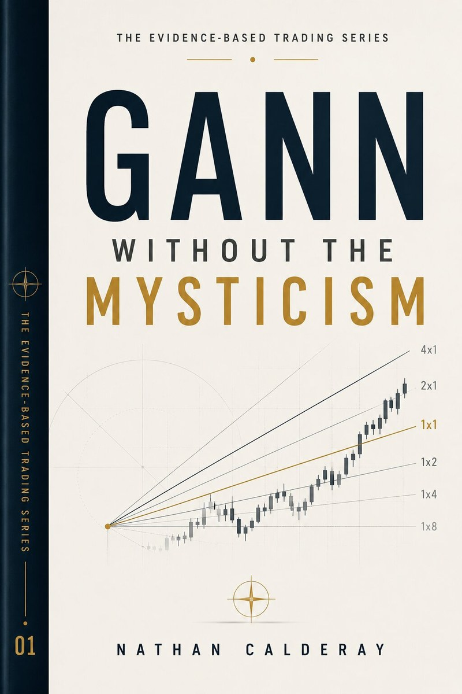

Book 01
Gann Without the Mysticism
Angles, squares and the Wheel of 24 — stripped of the astrology and the mythology of the man himself. What Gann actually drew, why a 1×1 line does something a trendline doesn't, and which parts of the legend were retrofitted by people selling courses.
- Gann angles & fans
- Squaring price & time
- The legend, audited